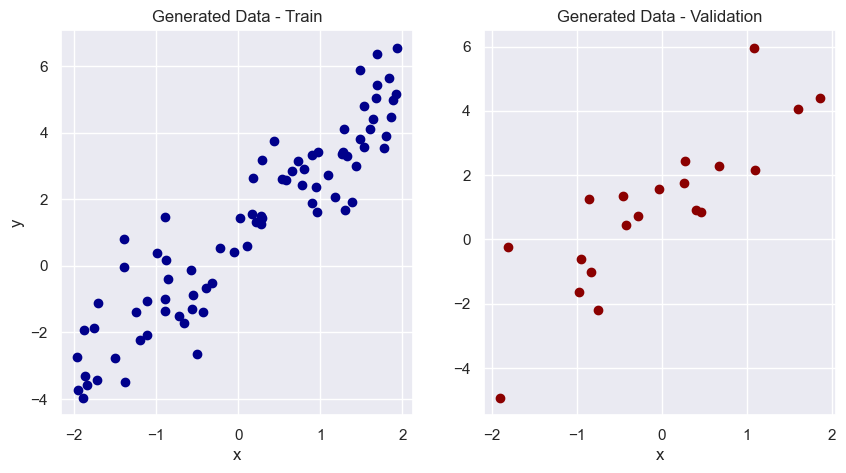
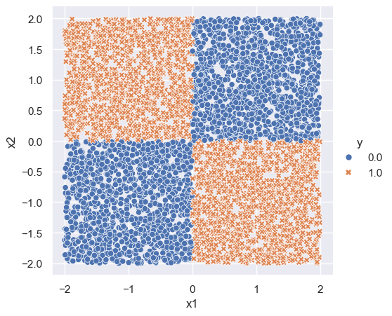
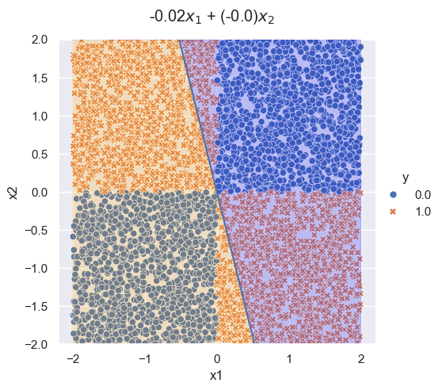
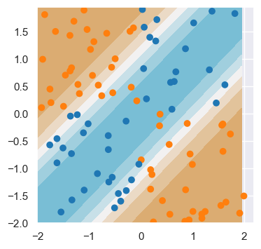
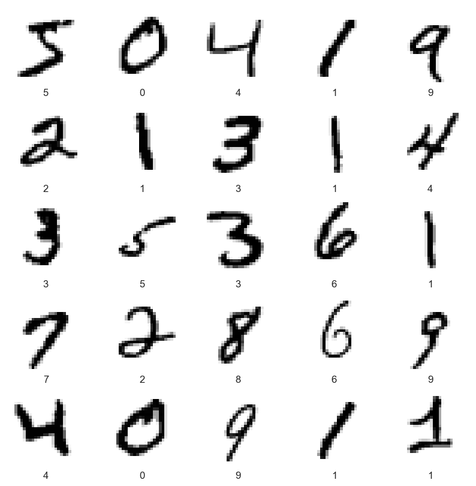
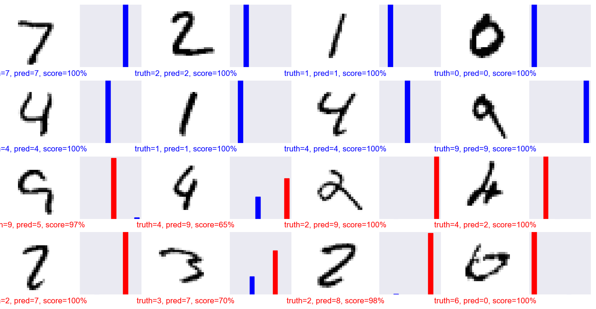
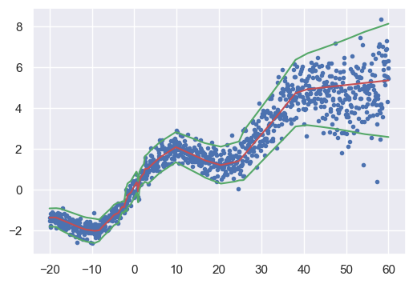

# import packages
import numpy as np
import pandas as pd
import seaborn as sns
import matplotlib.pyplot as plt
from sklearn.linear_model import LogisticRegression
import torch
import torch.nn as nn
import torch.nn.functional as F
from torch import optim
from torch.utils.data import TensorDataset, DataLoader
import torchvision
import warnings
warnings.filterwarnings('ignore')Lecture 2 - Neural Networks
PyTorch
PyTorch is an open-source machine learning library. It is one of the most popular frameworks for deep learning.
In Python, the PyTorch package is called torch, available here.
Simple Linear Regression
Let’s see how PyTorch can help us solve a predictive problem using the most simple linear regression model.
A simple linear regression model assumes that the observed data sample y_1, y_2, ..., y_n follows the following structure:
y_i = a + bx_i + \epsilon_i, \quad \epsilon_i \sim N(0,1).
Data Generation
Let’s start by creating some synthetic data to work with. The following code block does the following:
- We generate x_1, x_2, ..., x_{100} with each x_i \sim \text{Uniform}(-2,2).
- We let a = 1 and b = 2.
- We create y_1, y_2, ..., y_{100} by setting y_i = 1 + 2x_i + \epsilon_i, where \epsilon_i is some standard Gaussian noise.
# Data Generation
# np.random.uniform generates random samples from a uniform distribution over [0, 1).
x = np.random.uniform(low=-2,high=2, size =(100, 1))
# the resulting dimension of vector x will be 100 x 1.
# np.random.randn generates random samples from a standard normal distribution.
y = 1 + 2 * x + np.random.randn(100, 1) Train-Validation Split
Now we do a train-validation split, by randomly picking 80% of the indices as the train set and the rest as validation.
# Shuffles the indices
idx = np.arange(100)
np.random.shuffle(idx)
# Uses first 80 random indices for train
train_idx = idx[:80]
# Uses the remaining indices for validation
val_idx = idx[80:]
# Generates train and validation sets
x_train, y_train = x[train_idx], y[train_idx]
x_val, y_val = x[val_idx], y[val_idx]## Below shows a plot of the two sets of data.
fig, axes = plt.subplots(nrows=1, ncols=2, figsize=(10, 5))
axes[0].scatter(x_train, y_train, c = 'darkblue')
axes[0].set_xlabel('x')
axes[0].set_ylabel('y')
axes[0].set_title('Generated Data - Train')
axes[1].scatter(x_val, y_val, c = 'darkred')
axes[1].set_xlabel('x')
axes[1].set_title('Generated Data - Validation')
plt.show()
Moving to PyTorch
Let’s fit a linear regression model using PyTorch.
First, we need to transform our data to PyTorch tensors.
# Our data was in Numpy arrays, but we need to transform them into PyTorch's Tensors
x_train_tensor = torch.tensor(x_train, dtype=torch.float)
y_train_tensor = torch.tensor(y_train, dtype=torch.float)# Here we can see the difference
print(type(x_train), type(x_train_tensor), x_train_tensor.type())<class 'numpy.ndarray'> <class 'torch.Tensor'> torch.FloatTensorInitialize Parameters and Require Gradients
# Since we want to apply gradient descent on these parameters, we need
# to set requires_grad = True
### Initialize parameters...
a = torch.randn(1, requires_grad=True)
b = torch.randn(1, requires_grad=True)
### ----------------------
print(a, b)tensor([0.0764], requires_grad=True) tensor([1.3134], requires_grad=True)Gradient Computation with Autograd
The loss is:
L(a, b) = \frac{1}{n} \sum_{i=1}^n (y_i - a- b\cdot x_i)^2
The gradients are:
\frac{\partial L}{\partial a} = -2 \cdot \frac{1}{n} \sum_{i=1}^n (y_i - a - b\cdot x_i) \frac{\partial L}{\partial b} = -2 \cdot \frac{1}{n} \sum_{i=1}^n x_i(y_i - a - b\cdot x_i)
We won’t actually have to compute gradients - autograd is PyTorch’s automatic differentiation package, which will do it for us.
- The
backward()method helps us to compute partial derivatives of the loss function w.r.t. our parameters. It is essentially saying “do backpropagation”. - We obtain the computed gradients via the
.gradattribute.
# Specifying a learning rate
lr = 1e-1
yhat = a + b * x_train_tensor
error = y_train_tensor - yhat
loss = (error ** 2).mean()
# We just tell PyTorch to work its way BACKWARDS from the specified loss!
loss.backward()
# Let's check the computed gradients...
print('a grad (pytorch)', a.grad)
print('b grad (pytorch)', b.grad)
# compare to actual gradients
with torch.no_grad():
a_grad = -2 * error.mean()
b_grad = -2 * (x_train_tensor * error).mean()
print('a grad (manual)', a_grad)
print('b grad (manual)', b_grad)a grad (pytorch) tensor([-1.9982])
b grad (pytorch) tensor([-2.5759])
a grad (manual) tensor(-1.9982)
b grad (manual) tensor(-2.5759)Note: we use torch.no_grad() so PyTorch doesn’t keep track of the operations (otherwise, they may be included in the computation graph that PyTorch uses to calculate gradients).
Let’s now take a gradient descent step.
# update the parameters
with torch.no_grad():
a -= lr * a.grad
b -= lr * b.grad
# ----------------------
# PyTorch is "clingy" to its computed gradients, we need to tell it to zero out
a.grad.zero_() # note the "_" which means "in-place"
b.grad.zero_()tensor([0.])Putting it all together:
n_epochs = 100
for epoch in range(n_epochs):
yhat = a + b * x_train_tensor
error = y_train_tensor - yhat
loss = (error ** 2).mean()
# No more manual computation of gradients!
# a_grad = -2 * error.mean()
# b_grad = -2 * (x_tensor * error).mean()
### We just tell PyTorch to work its way BACKWARDS from the specified loss!
loss.backward()
### ----------------------
# Let's check the computed gradients...
if epoch % 5 == 0:
print('Epoch:', epoch, '(a, b) grad', a.grad, b.grad)
# Updating the parameters
with torch.no_grad():
a -= lr * a.grad
b -= lr * b.grad
a.grad.zero_()
b.grad.zero_()
### ----------------------
print('Final (a, b)', a, b)Epoch: 0 (a, b) grad tensor([-1.5175]) tensor([-1.7315])
Epoch: 5 (a, b) grad tensor([-0.4175]) tensor([-0.2149])
Epoch: 10 (a, b) grad tensor([-0.1279]) tensor([-0.0152])
Epoch: 15 (a, b) grad tensor([-0.0417]) tensor([0.0038])
Epoch: 20 (a, b) grad tensor([-0.0141]) tensor([0.0027])
Epoch: 25 (a, b) grad tensor([-0.0048]) tensor([0.0012])
Epoch: 30 (a, b) grad tensor([-0.0017]) tensor([0.0004])
Epoch: 35 (a, b) grad tensor([-0.0006]) tensor([0.0002])
Epoch: 40 (a, b) grad tensor([-0.0002]) tensor([5.5239e-05])
Epoch: 45 (a, b) grad tensor([-6.8247e-05]) tensor([1.9357e-05])
Epoch: 50 (a, b) grad tensor([-2.3618e-05]) tensor([6.4149e-06])
Epoch: 55 (a, b) grad tensor([-8.0764e-06]) tensor([2.4475e-06])
Epoch: 60 (a, b) grad tensor([-2.6971e-06]) tensor([1.3188e-06])
Epoch: 65 (a, b) grad tensor([-8.7917e-07]) tensor([8.7172e-07])
Epoch: 70 (a, b) grad tensor([-3.4273e-07]) tensor([7.8976e-07])
Epoch: 75 (a, b) grad tensor([-1.7881e-07]) tensor([9.4995e-07])
Epoch: 80 (a, b) grad tensor([-1.7881e-07]) tensor([9.4995e-07])
Epoch: 85 (a, b) grad tensor([-1.7881e-07]) tensor([9.4995e-07])
Epoch: 90 (a, b) grad tensor([-1.7881e-07]) tensor([9.4995e-07])
Epoch: 95 (a, b) grad tensor([-1.7881e-07]) tensor([9.4995e-07])
Final (a, b) tensor([0.9563], requires_grad=True) tensor([2.0711], requires_grad=True)This is the same as the simple linear regression formula:
b_hat = ((x_train-x_train.mean()) * (y_train-y_train.mean())).sum() / ((x_train-x_train.mean())**2).sum()a_hat = y_train.mean() - b_hat * x_train.mean()print(f"a (formula): {a_hat:.4f}, b (formula): {b_hat:.4f}")a (ls): 0.9563, b (ls): 2.0711Update All Parameters Simultaneously with Optimizer
Previously, we’ve been manually updating the parameters using the computed gradients. That’s probably fine for two parameters… but what if we had a whole lot of them?! We use one of PyTorch’s optimizers, like SGD or Adam.
An optimizer takes the parameters we want to update, the learning rate we want to use (and possibly many other hyper-parameters as well!) and performs the updates through its step() method.
Besides, we also don’t need to zero the gradients one by one anymore. We just invoke the optimizer’s zero_grad() method and that’s it!
In the code below, we create a Stochastic Gradient Descent (SGD) optimizer to update our parameters a and b. Note: we will use the whole dataset, not batches, so it is technically GD (not SGD). However, the optimizer in torch is still called SGD.
a = torch.randn(1, requires_grad=True)
b = torch.randn(1, requires_grad=True)
print(f"Initializations: a = {a.item():.3f}, b = {b.item():.3f}")
lr = 1e-1
n_epochs = 1000
### Defines a SGD optimizer to update the parameters
optimizer = optim.SGD([a, b], lr=lr)
### ----------------------
for epoch in range(n_epochs):
yhat = a + b * x_train_tensor
error = y_train_tensor - yhat
loss = (error ** 2).mean()
loss.backward()
# No more manual update!
# with torch.no_grad():
# a -= lr * a.grad
# b -= lr * b.grad
### perform the update via step() ###
optimizer.step()
### ---------------------- ###
# No more telling PyTorch to let gradients go!
# a.grad.zero_()
# b.grad.zero_()
### clearing the gradient ###
optimizer.zero_grad()
### ---------------------- ###
print(f"Output: a = {a.item():.3f}, b = {b.item():.3f}")Initializations: a = -0.684, b = 0.537
Output: a = 1.113, b = 1.973Model Building
Python is an object-oriented programming language.
Every item you interact with is an object. An object has a type, as well as:
- attributes (values)
- methods (functions that can be applied to the object)
As an example, 'hello' in Python is an object of type str, with methods such as split, join etc.
A Python class is a “blueprint” for an object.
Inheritance allows us to define a class that inherits all the methods and properties from another class.
nn.Module Class
In PyTorch, a model is represented by a regular Python class that inherits from the nn.Module class. nn.Module is everywhere in PyTorch and represents mappings in neural networks.
Let’s look at an example:
class ManualLinearRegression(nn.Module):
def __init__(self):
super().__init__() # inherits from nn.Module
# Initialization of a and b.
# To make "a" and "b" real parameters of the model, we need to wrap them with nn.Parameter
self.a = nn.Parameter(torch.randn(1, requires_grad=True))
self.b = nn.Parameter(torch.randn(1, requires_grad=True))
def forward(self, x):
# Computes the outputs / predictions
return self.a + self.b * xclass ManualLinearRegression(nn.Module)- this statement declares a class
ManualLinearRegressionwhich inherits from the base classnn.Module.
- this statement declares a class
Indented beneath the class statement are the methods of this class: __init__ and forward:
__init__- all classes have an
__init__which is executed when the class is instantiated selfrefers to an instance of the class- in
__init__, we have attached the parametersaandbas attributes super().__init__()is a call to the__init__ofnn.Module. For torch models, we will always be making thissuper()call as it is necessary for the model to be properly interpreted by torch.
- all classes have an
forwardis called when the neural network is run on input data.
# Now we can create a model
model = ManualLinearRegression()
# We can also inspect its parameters using its state_dict
print(model.state_dict())
lr = 1e-1
n_epochs = 1000
loss_fn = nn.MSELoss(reduction='mean')
optimizer = optim.SGD(model.parameters(), lr=lr)
for epoch in range(n_epochs):
# In PyTorch, models have a train() method which sets the model to training mode.
### enter training mode
model.train()
# No more manual prediction!
# yhat = a + b * x_tensor
### this is the forward step
yhat = model(x_train_tensor)
### ----------------------
loss = loss_fn(y_train_tensor, yhat)
loss.backward()
optimizer.step()
optimizer.zero_grad()
print(model.state_dict())OrderedDict({'a': tensor([-0.6481]), 'b': tensor([1.4267])})
OrderedDict({'a': tensor([1.1129]), 'b': tensor([1.9731])})Utilizing PyTorch Layers
For simple tasks like building a linear regression, we could directly create a and b as nn.Parameters.
Instead, we can use PyTorch’s nn.Linear to create a linear layer. Later, this will let us build more complicated networks. Note: nn.Linear automatically adds a bias term.
class PyTorchLinearRegression(nn.Module):
def __init__(self):
super().__init__()
self.linear = nn.Linear(1, 1) # arguments: (input dim, output dim)
def forward(self, x):
return self.linear(x)for name, param in PyTorchLinearRegression().named_parameters():
if param.requires_grad:
print(name, param.data)linear.weight tensor([[-0.5715]])
linear.bias tensor([-0.5772])# Now we can create a model
model = PyTorchLinearRegression()
# We can also inspect its parameters using its state_dict
print(model.state_dict())
lr = 1e-1
n_epochs = 1000
loss_fn = nn.MSELoss(reduction='mean')
optimizer = optim.SGD(model.parameters(), lr=lr)
for epoch in range(n_epochs):
# In PyTorch, models have a train() method which sets the model to training mode.
### enter training mode ###
model.train()
# No more manual prediction!
# yhat = a + b * x_tensor
### this is the forward step ###
yhat = model(x_train_tensor)
### ---------------------- ###
loss = loss_fn(y_train_tensor, yhat)
loss.backward()
optimizer.step()
optimizer.zero_grad()
print(model.state_dict())OrderedDict({'linear.weight': tensor([[-0.0886]]), 'linear.bias': tensor([0.0320])})
OrderedDict({'linear.weight': tensor([[1.9731]]), 'linear.bias': tensor([1.1129])})XOR problem
The “XOR” (or “exclusive OR”) problem is often used to illustrate the ability of neural networks to fit complicated functions. The XOR problem has a checkerboard structure:
n = 5000
p = 2
x = np.random.uniform(-2, 2, size=(n, p))
#x[,1] <- first column (R)
#x[:, 0] <- first column (Python)
y = ((x[:,0] < 0) & (x[:, 1] > 0)).astype(x.dtype) + ((x[:,0] > 0) & (x[:, 1] < 0)).astype(x.dtype)
df = np.hstack([y.reshape((n, 1)), x])
df = pd.DataFrame(df, columns = ['y', 'x1', 'x2'])
sns.set_theme()
xor_plot = sns.relplot(df, x='x1', y='x2', hue='y', style='y')
xor_plot.figure.subplots_adjust(top=.9)
Logistic regression can only fit linear decision boundaries, and so fails the XOR problem.
## logitstic regression doesn't work
log_fit = LogisticRegression()
log_fit.fit(x, y)
coeffs = log_fit.coef_[0]
coeff = -coeffs[0]/coeffs[1]
## plot
logit_plot = sns.relplot(df, x='x1', y='x2', hue='y', style='y')
plt.axline([0,0], slope=coeff)
## title
logit_plot.figure.subplots_adjust(top=.9)
logit_plot.figure.suptitle(str(round(coeffs[0], 2)) + r'$x_1$ + ' + '(' + str(round(coeffs[1], 2)) + ')' + r'$x_2$')
## fill in area
x_fill = np.linspace(-2, 2, num=200)
y_line = coeff * x_fill
logit_plot.ax.fill_between(x_fill, y_line, 2, color='blue', alpha=0.2)
logit_plot.ax.fill_between(x_fill, -2, y_line, color='orange', alpha=0.2)
logit_plot.ax.set_ylim(-2,2)
Multi-Layer Neural Network
Here is an example of a one hidden-layer neural network in torch named XORNet.
Instead of a single linear layer, we have:
- a linear layer
- a ReLU activation
- a linear layer
- a sigmoid activation
nn.Sequential allows us to stack these layers together - we store the final object as an attribute of the model: self.sequential.
The forward method then passes input data through self.sequential to get the output. That is:
f(x_i) = g(W^{(2)}(a(W^{(1)}x_i + b^{(1)}))+b^{(2)})
class XORNet(nn.Module):
def __init__(self, input_dim, hidden_dim):
super().__init__()
self.sequential = nn.Sequential(
nn.Linear(input_dim, hidden_dim),
nn.ReLU(),
nn.Linear(hidden_dim, 1),
nn.Sigmoid())
def forward(self, x):
y = self.sequential(x)
y = torch.flatten(y) # we do this to turn y into a one-dim tensor
return y
def loss_fn(self, y, y_pred):
loss = y * torch.log(y_pred + 1e-8) + (1-y) * torch.log(1-y_pred + 1e-8)
output = -loss.sum()
return outputhidden_dim=2
model = XORNet(input_dim=p, hidden_dim=hidden_dim)modelXORNet(
(sequential): Sequential(
(0): Linear(in_features=2, out_features=2, bias=True)
(1): ReLU()
(2): Linear(in_features=2, out_features=1, bias=True)
(3): Sigmoid()
)
)Data
For torch to read the data, it needs to be a torch.tensor type:
x_train = torch.tensor(x, dtype=torch.float)
y_train = torch.tensor(y, dtype=torch.float)We combine x_train and y_train into a TensorDataset, a dataset recognizable by torch. TensorDataset stores the samples and their labels. It is a subclass of the more general torch.utils.data.Dataset, which you can customize for non-standard data.
train_data = TensorDataset(x_train, y_train)TensorDataset is helpful as it can be passed to DataLoader(). DataLoader wraps an iterable around the Dataset class. This lets us loop over the DataLoader to extract a mini-batch at each iteration.
train_loader = DataLoader(dataset=train_data, batch_size=10, shuffle=True)To retrieve a sample mini-batch, the following will return a list containing two tensors: one for the features, another one for the labels.
next(iter(train_loader))[tensor([[-1.0248, -0.2131],
[-0.7861, 1.6893],
[-1.7932, -0.0574],
[ 0.7178, -0.4897],
[ 1.9000, 1.6038],
[ 0.7674, -1.9498],
[-0.2336, -1.4478],
[-1.9838, -0.8512],
[-0.2094, 0.1471],
[-1.2884, -0.1538]]),
tensor([0., 1., 0., 1., 0., 1., 0., 0., 1., 0.])]Training
We now set up the optimizer for training. We use Adam, and a base learning rate of lr=0.01. We set the number of epochs to 100. (Rule of thumb: pick largest lr that still results in convergence)
lr = 0.01
epochs = 100
optimizer = optim.Adam(model.parameters(), lr=lr)
# set model to training mode
model.train()XORNet(
(sequential): Sequential(
(0): Linear(in_features=2, out_features=2, bias=True)
(1): ReLU()
(2): Linear(in_features=2, out_features=1, bias=True)
(3): Sigmoid()
)
)Now we train the model:
for epoch in range(epochs):
# in each epoch, iterate over all batches of data (easily accessed through train_loader)
l = 0
for x_batch, y_batch in train_loader:
pred = model(x_batch) # this is the output from the forward function
loss = model.loss_fn(y_batch, pred) # calculate loss function
loss.backward() # computes gradients wrt loss function
optimizer.step() # updates parameters
optimizer.zero_grad() # set the gradients back to zero (otherwise grads are accumulated)
l += loss.item()
if epoch % 10 == 0:
print('epoch: ', epoch, 'loss:', f"{l:.3}")epoch: 0 loss: 2.55e+03
epoch: 10 loss: 1.79e+03
epoch: 20 loss: 1.79e+03
epoch: 30 loss: 1.79e+03
epoch: 40 loss: 1.79e+03
epoch: 50 loss: 1.79e+03
epoch: 60 loss: 1.79e+03
epoch: 70 loss: 1.79e+03
epoch: 80 loss: 1.79e+03
epoch: 90 loss: 1.78e+03To visualize the end result, we plot the predicted values over the whole space (the decision surface).
x1 = np.arange(-2, 2, 0.05)
x2 = np.arange(-2, 2, 0.05)
x_test_np = np.array([(i, j) for i in x1 for j in x2])
y_test_np = ((x_test_np[:,0] < 0) & (x_test_np[:, 1] > 0)).astype(x_test_np.dtype) + ((x_test_np[:,0] > 0) & (x_test_np[:, 1] < 0)).astype(x_test_np.dtype)
x_test = torch.tensor(x_test_np, dtype=torch.float)
y_test = torch.tensor(y_test_np)
model.eval()
y_pred = model(x_test)
y_pred_np = y_pred.detach().numpy()
y_pred_np = y_pred_np.reshape(x1.shape[0], x2.shape[0])
seaborn_cols = sns.color_palette("tab10")
cols = [seaborn_cols[int(i)] for i in y]
custom_cmap = sns.diverging_palette(220, 50, s=70, l=70, as_cmap=True)
fig, ax = plt.subplots(1, 1)
fig.set_size_inches(4, 4)
ax.contourf(x1, x2, y_pred_np, cmap=custom_cmap)
ax.scatter(x[0:100,0], x[0:100,1], c=cols[0:100])
model.sequential[0].weightParameter containing:
tensor([[-2.3491, 2.3204],
[ 2.4103, -2.3208]], requires_grad=True)model.sequential[0].biasParameter containing:
tensor([-0.0632, -0.1064], requires_grad=True)model.sequential[2].weightParameter containing:
tensor([[1.3308, 1.3007]], requires_grad=True)model.sequential[2].biasParameter containing:
tensor([-3.4300], requires_grad=True)Play around with different sizes of hidden_dim and see the difference!
MNIST example
We use torchvision.datasets to download the MNIST data.
(mnist_train,
mnist_test) = [torchvision.datasets.MNIST(root='../data',
train=train,
download=True,
transform=torchvision.transforms.ToTensor())
for train in [True, False]]
plt.figure(figsize=(10, 10))
for i in range(25):
plt.subplot(5, 5, i + 1)
plt.xticks([])
plt.yticks([])
plt.grid(False)
train_image, label = mnist_train[i]
plt.imshow(train_image[0], cmap=plt.cm.binary)
plt.xlabel(label)
plt.show()
Set up our dataloaders.
train_loader = DataLoader(dataset=mnist_train, batch_size=64, shuffle=True)
test_loader = DataLoader(dataset=mnist_test, batch_size=10000, shuffle=False)Let’s define our neural network for the MNIST classification problem.
class MNISTNet(nn.Module):
def __init__(self):
super().__init__()
self.layers = nn.Sequential(
nn.Linear(28*28, 256),
nn.ReLU(),
nn.Linear(256, 128),
nn.ReLU(),
nn.Linear(128, 10),
nn.Softmax()
)
def forward(self, x):
prob = self.layers(x)
return prob
def loss_fn(self, y, y_pred):
log_pred = torch.log(y_pred + 1e-8)
loss = -(log_pred * y).sum(1).mean()
return lossInstantiate our model:
model = MNISTNet()Train our model:
lr = 0.001
epochs = 50
optimizer = optim.Adam(model.parameters(), lr=lr)
# set model to training mode
model.train()
for epoch in range(epochs):
l = 0
for x_batch, y_batch in train_loader:
x_batch = x_batch.reshape(x_batch.shape[0], 28*28)
y_batch = F.one_hot(y_batch, num_classes=10)
y_pred = model(x_batch)
loss = model.loss_fn(y_batch, y_pred)
loss.backward()
optimizer.step()
optimizer.zero_grad()
l += loss.item()
if epoch % 10 == 0:
print('epoch: ', epoch, 'loss:', f"{l:.3}")epoch: 0 loss: 2.59e+02
epoch: 10 loss: 13.7
epoch: 20 loss: 7.05
epoch: 30 loss: 7.11
epoch: 40 loss: 7.72Calculate our accuracy:
model.eval()
x_batch, y_batch = next(iter(test_loader))
x_batch = x_batch.reshape(x_batch.shape[0], 28 * 28)
y_pred_array = model(x_batch)
y_pred = torch.argmax(y_pred_array, axis=1)
acc = (y_pred == y_batch).sum()
acc = acc / len(y_pred)Let’s look at some interesting results (code adapted from here)
# find interesting test images
errors = torch.where(y_pred != y_batch)[0]
inds1 = range(8)
inds2 = errors[:8]
inds = np.concatenate((inds1, inds2))
pred_array = y_pred_array.detach().numpy()
num_rows = 4
num_cols = 4
num_images = num_rows * num_cols
plt.figure(figsize=(2 * 2 * num_cols, 2 * num_rows))
for i in range(num_images):
n = inds[i]
plt.subplot(num_rows, 2 * num_cols, 2 * i + 1)
plt.xticks([])
plt.yticks([])
plt.grid(False)
image, label = mnist_test[n]
plt.imshow(image[0], cmap=plt.cm.binary)
plt.xlabel(label)
predicted_label = y_pred[n]
if predicted_label == label:
color = 'blue'
else:
color = 'red'
plt.xlabel("truth={}, pred={}, score={:2.0f}%".format(
label,
predicted_label,
100 * np.max(pred_array[n])),
color=color)
plt.subplot(num_rows, 2*num_cols, 2*i+2)
plt.grid(False)
plt.xticks([])
plt.yticks([])
thisplot = plt.bar(range(10), pred_array[n], color="#777777")
plt.ylim([0, 1])
predicted_label = np.argmax(pred_array[n])
thisplot[predicted_label].set_color('red')
thisplot[label].set_color('blue')
Heteroskedastic regression
This code is adapted from here.
# Make data
x_range = [-20, 60] # test
x_ranges = [[-20, 60]]
ns = [1000]
def load_dataset():
def s(x): # std of noise
g = (x - x_range[0]) / (x_range[1] - x_range[0])
return 0.25 + g**2.0
x = []
y = []
for i in range(len(ns)):
n = ns[i]
xr = x_ranges[i]
x1 = np.linspace(xr[0], xr[1], n)
eps = np.random.randn(n) * s(x1)
y1 = (1 * np.sin(0.2 * x1) + 0.1 * x1) + eps
x = np.concatenate((x, x1))
y = np.concatenate((y, y1))
# print(x.shape)
x = x[..., np.newaxis]
n_test = 150
x_test = np.linspace(*x_range, num=n_test).astype(np.float32)
x_test = x_test[..., np.newaxis]
return y, x, x_test
y, x, x_test = load_dataset()Define neural network
class HetNet(nn.Module):
def __init__(self, input_dim, output_dim, hidden_dims, mean_dims, var_dims):
super().__init__()
self.input_dim = input_dim
self.output_dim = output_dim
self.hidden_dim = hidden_dims
self.mean_dims = mean_dims
self.var_dims = var_dims
# create backbone
current_dim = input_dim
self.layers = nn.ModuleList()
for i in range(len(hidden_dims)):
hdim = hidden_dims[i]
self.layers.append(nn.Linear(current_dim, hdim))
current_dim = hdim
# create heads
core_dim = hidden_dims[-1]
current_dim = core_dim
self.mean_layers = nn.ModuleList()
for i in range(len(mean_dims)):
hdim = mean_dims[i]
self.mean_layers.append(nn.Linear(current_dim, hdim))
current_dim = hdim
self.mean_layers.append(nn.Linear(current_dim, output_dim))
current_dim = core_dim
self.var_layers = nn.ModuleList()
for i in range(len(var_dims)):
hdim = var_dims[i]
self.var_layers.append(nn.Linear(current_dim, hdim))
current_dim = hdim
self.var_layers.append(nn.Linear(current_dim, output_dim))
def core_net(self, x):
for layer in self.layers:
x = F.relu(layer(x))
return x
def mean_net(self, x):
for layer in self.mean_layers[:-1]:
x = F.relu(layer(x))
x = self.mean_layers[-1](x)
return x
def var_net(self, x):
for layer in self.var_layers[:-1]:
x = F.relu(layer(x))
x = self.var_layers[-1](x)
return x
def forward(self, x):
mean = self.mean_net(self.core_net(x))
log_var = self.var_net(self.core_net(x))
return mean, log_var
def loss_fn(self, x, y):
mean, log_var = self.forward(x)
var = torch.exp(log_var)
loss = torch.pow(y-mean, 2) / var + log_var
out = loss.mean()
return outSet up data
x_train = torch.tensor(x, dtype=torch.float)
y_train = torch.tensor(y, dtype=torch.float)
y_train = y_train.unsqueeze(-1)
train_data = TensorDataset(x_train, y_train)
train_loader = DataLoader(dataset=train_data, batch_size=10, shuffle=True)Initialize model
hidden_dims = [50, 50]
mean_dims = [20]
var_dims = [20]
model = HetNet(input_dim=1, output_dim=1, hidden_dims=hidden_dims, mean_dims=mean_dims, var_dims=var_dims)Train
lr = 0.001
epochs = 500
optimizer = optim.Adam(model.parameters(), lr=lr)
# set model to training mode
model.train()
for epoch in range(epochs):
l = 0
for x_batch, y_batch in train_loader:
loss = model.loss_fn(x_batch, y_batch)
loss.backward()
optimizer.step()
optimizer.zero_grad()
l += loss.item()
if epoch % 50 == 0:
print('epoch: ', epoch, 'loss:', f"{l:.3}")epoch: 0 loss: 1.27e+02
epoch: 50 loss: 2.11
epoch: 100 loss: -13.7
epoch: 150 loss: -23.8
epoch: 200 loss: -26.2
epoch: 250 loss: -26.0
epoch: 300 loss: -31.2
epoch: 350 loss: -31.0
epoch: 400 loss: -31.0
epoch: 450 loss: -29.0Plot results
model.eval()
mean, log_var = model(x_train)
sd = torch.exp(0.5 * log_var)
mean_np = mean.detach().numpy()
sd_np = sd.detach().numpy()
fig, ax = plt.subplots(1, 1)
fig.set_size_inches(6, 4)
ax.plot(x, y, '.', label="observed")
ax.plot(x, mean_np, 'r-')
ax.plot(x, mean_np + 2 * sd_np, 'g-')
ax.plot(x, mean_np - 2 * sd_np, 'g-')